Sur toutes les pages, en haut à droite (ou Ctrl + J). Un point de couleur sur le bouton : il a quelque chose à vous dire.
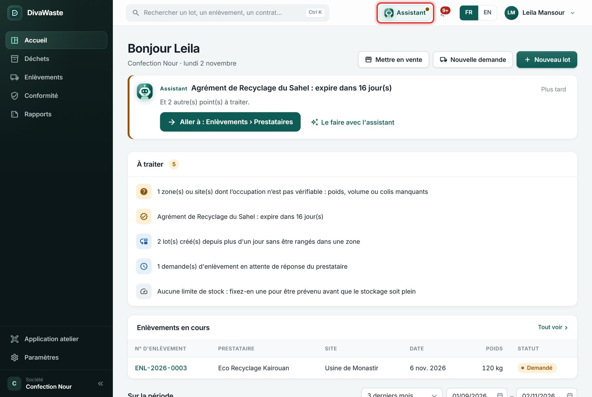
Le point le plus utile de la page, avec un bouton pour le faire (« Les afficher »), Le faire avec l'assistant, et Comment marche cette page ? qui déplie une explication courte.
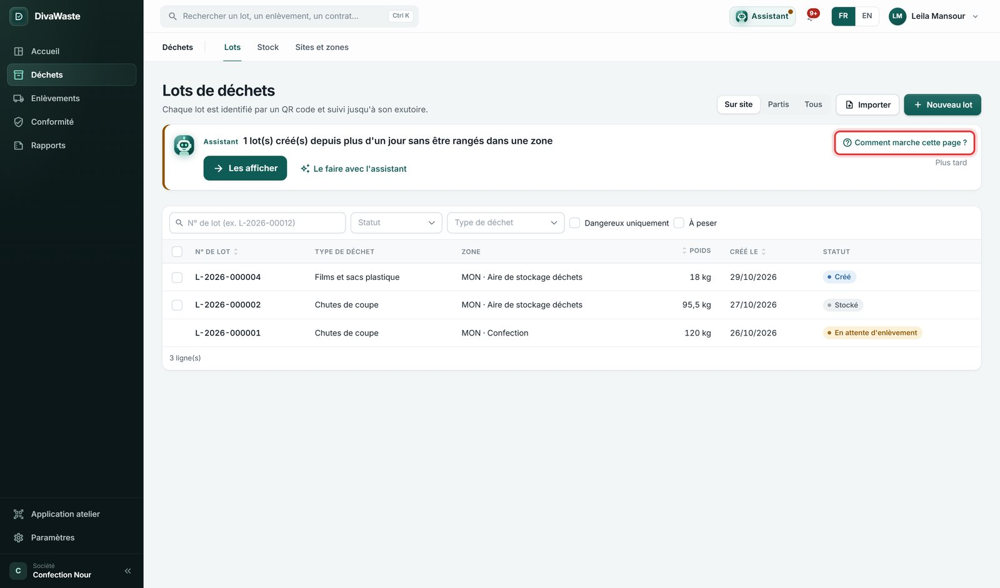
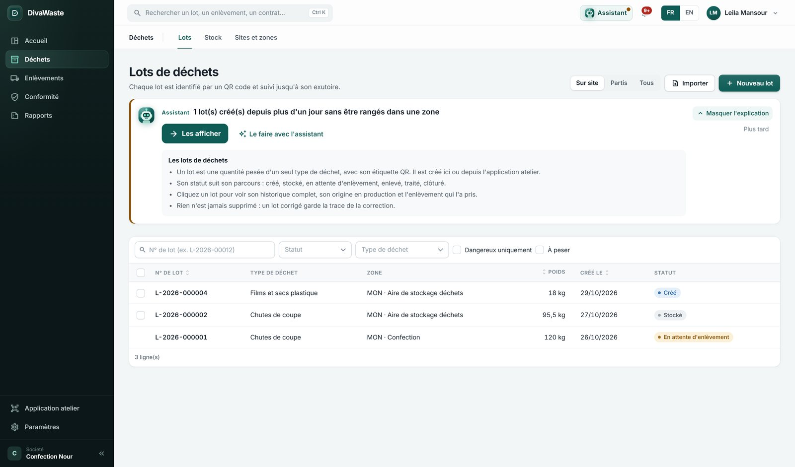
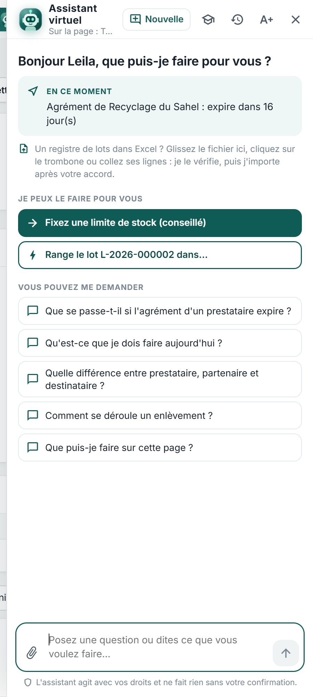
« Où… ? », « Comment… ? » : il nomme la page et le bouton, ouvre la page et fait clignoter le bouton. Si le bouton est caché par la fenêtre, elle s'écarte.
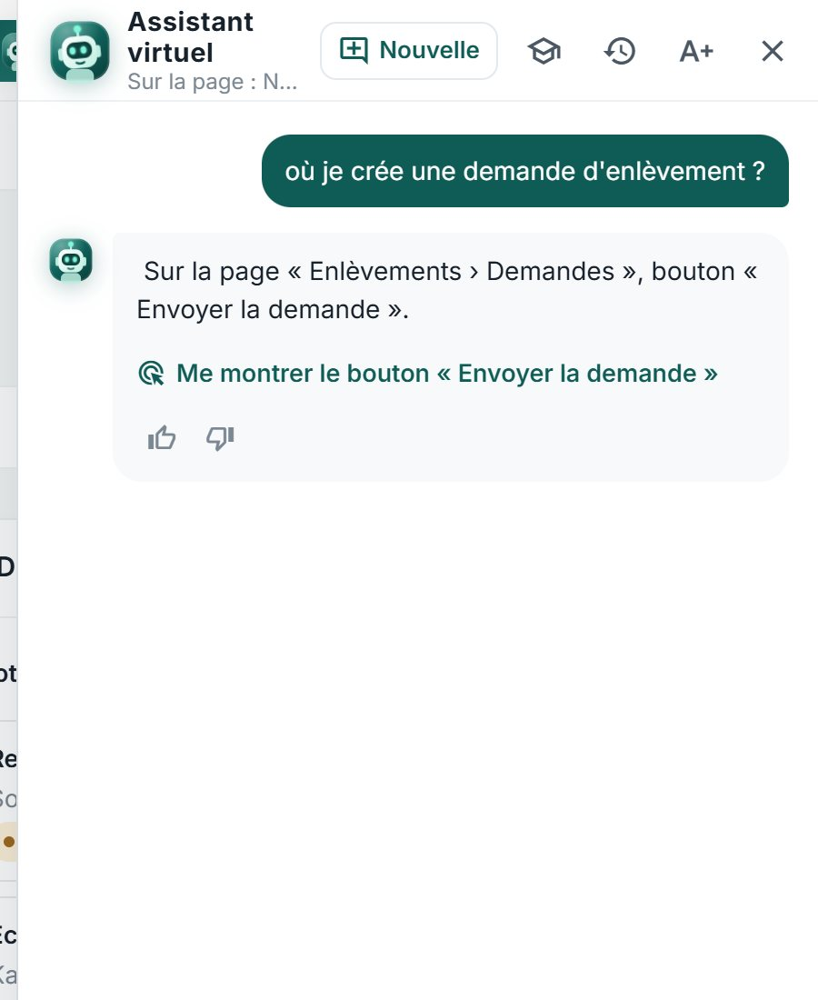
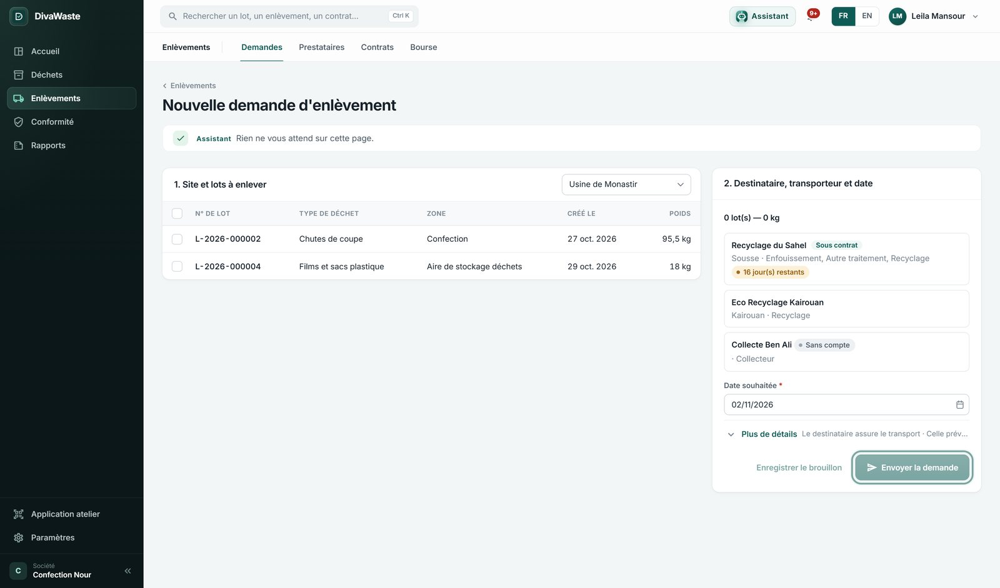
« où je crée une demande d'enlèvement ? » → la page Nouvelle demande, bouton « Envoyer la demande » mis en évidence.
Il répond avec vos lots, enlèvements, prestataires, chiffres — seulement ce que votre compte a le droit de voir.
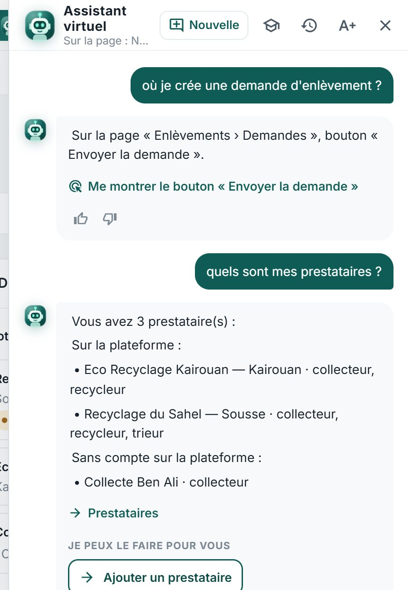
« qu'est-ce que je dois faire aujourd'hui ? » : la liste À traiter, du plus urgent, avec un bouton par point.
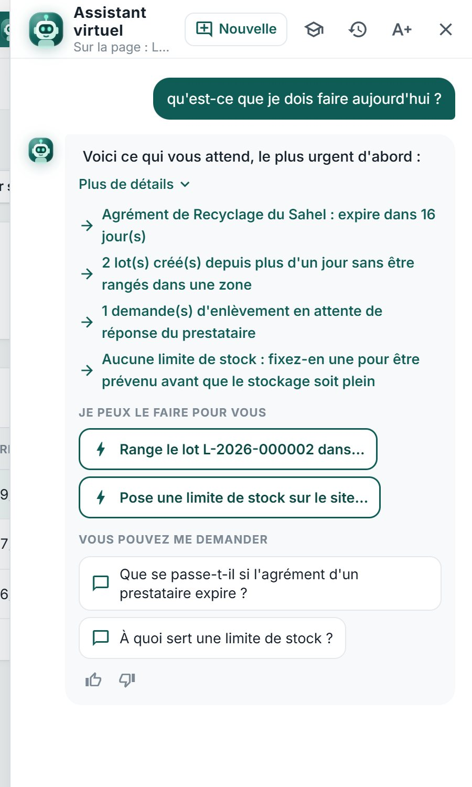
Bordereaux, agréments, autorisations, tolérances… La réponse indique « D'après N source(s) vérifiée(s) » : elle s'appuie sur la réglementation et les règles de DivaWaste, pas sur une supposition.
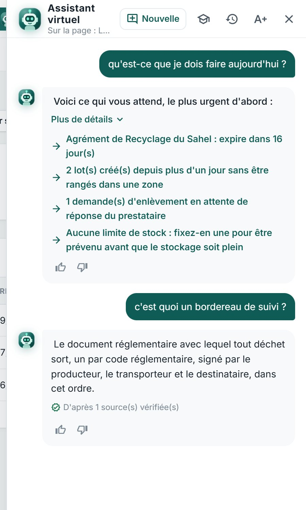
Dites ce que vous voulez faire. Il prépare l'action et l'affiche « À confirmer » : rien n'est fait avant votre clic.
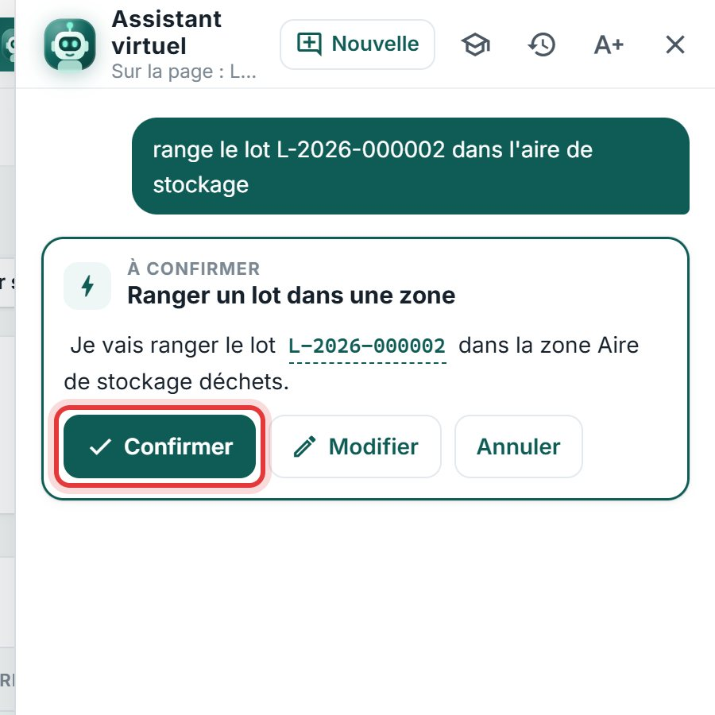
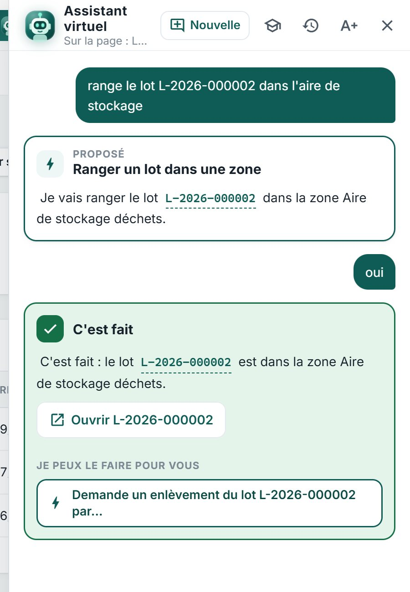
Ce qu'il peut préparer (selon vos droits) :
Quand il refuse, il dit pourquoi et ce que vous pouvez faire vous-même.
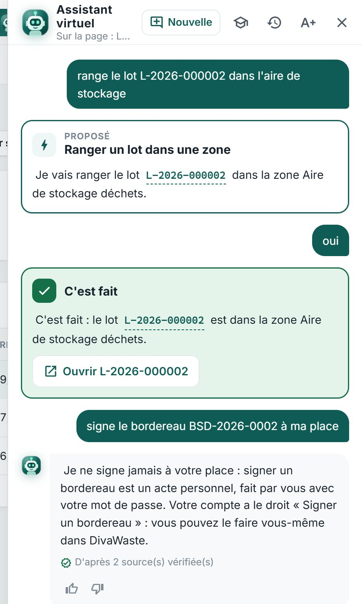
| Conseil | Exemple |
|---|---|
| Vos mots, une chose à la fois | « range le lot L-2026-000002 dans l'aire de stockage » |
| Donnez les numéros (lot, enlèvement, bordereau) | « où en est ENL-2026-0001 ? » |
| Dites l'unité | « pèse ce lot à 35 kg », « 1,2 t » |
| Commencez par où / comment pour être guidé | « comment je signe un bordereau ? » |
| Changez de sujet ? Nouvelle conversation | bouton Nouvelle en haut |
| Langue | Français et anglais. L'arabe n'est pas encore pris en charge : il répond alors en français. |
Sous chaque réponse : 👍 ou 👎. Avec 👎, écrivez ce qui manquait, puis Envoyer. Ces remarques servent à son prochain entraînement.
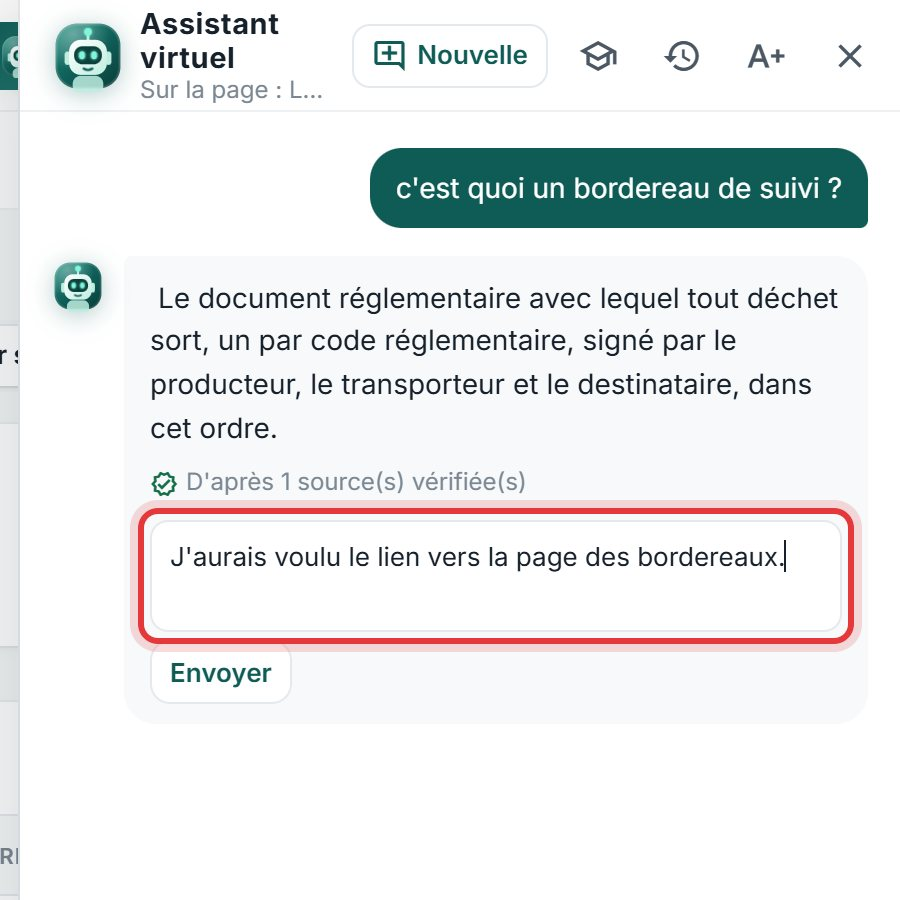
Conversations (l'horloge, en haut) : vos échanges passés, pour les rouvrir.
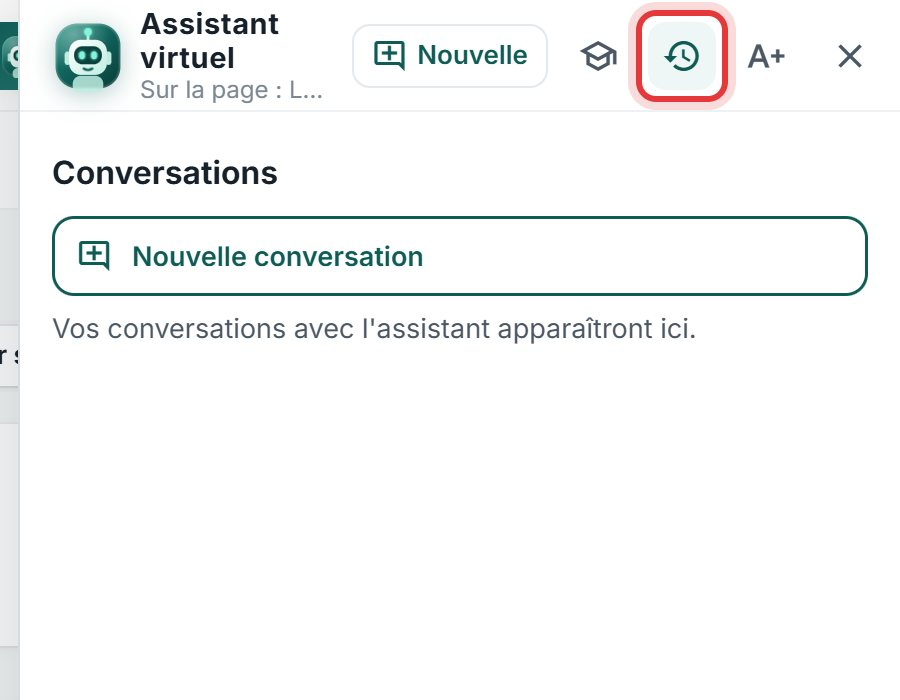
Le chapeau, en haut de la fenêtre. Une mission (trouver un bouton, faire une action, poser une question de règle, lire un chiffre), votre question avec vos mots, sa réponse, votre verdict. Une réponse juste rapporte 1 point, une erreur trouvée 3 : ce sont les erreurs qui l'améliorent.
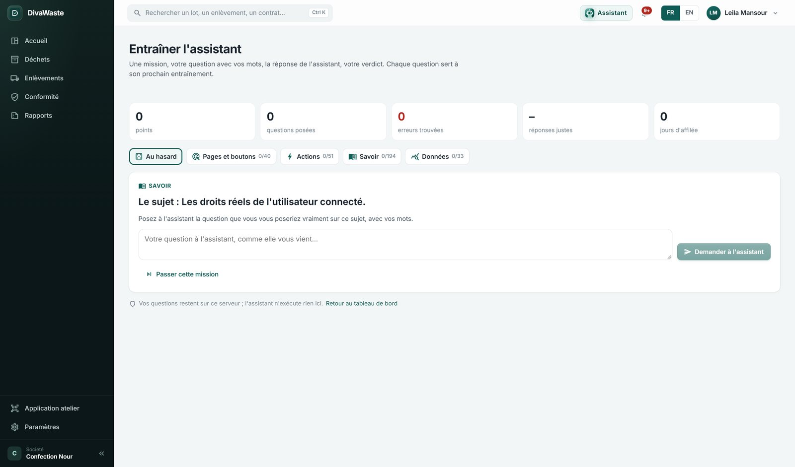
Posez ces questions, cochez ce qui marche, notez ce qui gêne (et utilisez 👎 dans l'assistant).
| Question | Résultat attendu | |
|---|---|---|
| ☐ | « où je crée une demande d'enlèvement ? » | La bonne page s'ouvre, le bouton clignote. |
| ☐ | « quels sont mes prestataires ? » | Vos prestataires, avec et sans compte. |
| ☐ | « qu'est-ce que je dois faire aujourd'hui ? » | Les points À traiter, du plus urgent. |
| ☐ | « combien de déchets on a évacués ce mois-ci ? » | La période et les chiffres, en mots (« Déchets évacués : 336 kg »). |
| ☐ | « c'est quoi un bordereau de suivi ? » | Une définition, « D'après N source(s) vérifiée(s) ». |
| ☐ | « crée un lot de 25 kg de cartons dans l'aire de stockage » | « À confirmer » avec 25 kg ; rien n'est créé avant Confirmer. |
| ☐ | « range le lot L-… dans l'aire de stockage » | Confirmer → « C'est fait » et le lien vers le lot. |
| ☐ | « signe le bordereau BSD-… à ma place » | Refus expliqué ; il dit comment le faire vous-même. |
| ☐ | Un fichier Excel glissé dans la fenêtre | « Importer N lots », rien avant Confirmer. |
| ☐ | 👎 avec une remarque | La remarque s'envoie ; « Merci, c'est noté. » s'affiche. |